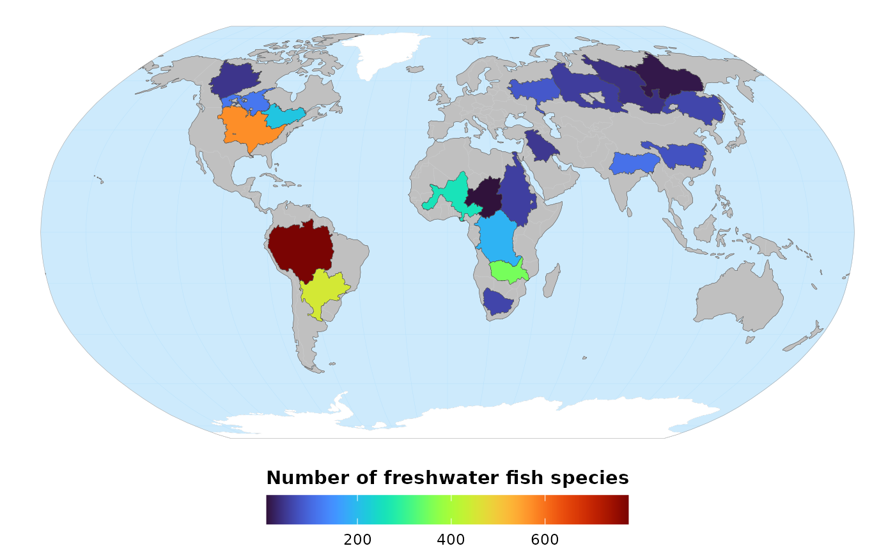

Plots a terrestrial spatially-explicit metric on a World map. Basemap layers
(continents, oceans, graticules) come from the Natural Earth website
https://www.naturalearthdata.com/. The map is plotted in the Robinson
projection (EPSG = 54030).
ggmap_terrestrial(
data,
metric,
title = NULL,
palette = viridisLite::turbo(n = 100)
)an sf object. The spatial layer (POLYGONS, POINTS, etc.)
containing the variable metric for which values are to be mapped. For
aesthetic purposes, this layer should contain only terrestrial (including
freshwater) values (marine areas will be masked by the ocean layer).
See ggmap_marine() for mapping a marine layer.
a character of length 1. The column in data for which
values are to be mapped. This variable must be numeric.
a character of length 1. The title of the map (legend title).
Default is NULL (no title).
a character of colors used to categorize the values of
metric. Default is viridisLite::turbo() with 100 colors.
A ggplot object.
## Attach packages ----
library("rphenofish")
library("ggplot2")
## Path to example marine layer ----
file_name <- system.file(file.path("extdata", "freshwater_fish_richness.gpkg"),
package = "rphenofish")
## Import example freshwater layer ----
freshwater_fish_richness <- sf::st_read(file_name, quiet = TRUE)
freshwater_fish_richness
#> Simple feature collection with 20 features and 2 fields
#> Geometry type: MULTIPOLYGON
#> Dimension: XY
#> Bounding box: xmin: -135.4 ymin: -34.95415 xmax: 141.517 ymax: 73.11576
#> Geodetic CRS: WGS 84
#> First 10 features:
#> BasinName richness geom
#> 1 Amazon 777 MULTIPOLYGON (((-59.97674 5...
#> 2 Congo 189 MULTIPOLYGON (((23.47701 8....
#> 3 Nile 54 MULTIPOLYGON (((23.23992 18...
#> 4 Mississippi 571 MULTIPOLYGON (((-109.2917 4...
#> 5 Ob 52 MULTIPOLYGON (((70.33009 67...
#> 6 Parana 449 MULTIPOLYGON (((-56.79583 -...
#> 7 Yenisey 38 MULTIPOLYGON (((85.95452 71...
#> 8 Lena 13 MULTIPOLYGON (((126.7583 73...
#> 9 Niger 260 MULTIPOLYGON (((9.533901 17...
#> 10 Amur 61 MULTIPOLYGON (((124.6704 55...
## Map freshwater fish richness ----
freshwater_map <- ggmap_terrestrial(data = freshwater_fish_richness,
metric = "richness",
title = "Number of freshwater fish species")
freshwater_map

if (FALSE) {
## Save map in PNG ----
ggsave(plot = freshwater_map,
filename = "freshwater_fish_richness.png",
width = 20,
height = 13,
units = "cm",
dpi = 300,
bg = "white")
}